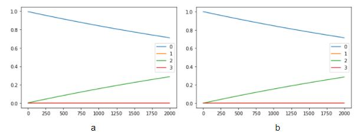
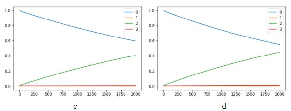
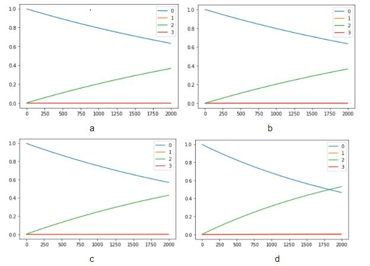
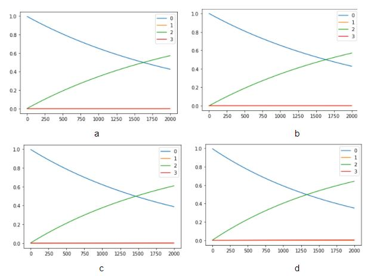
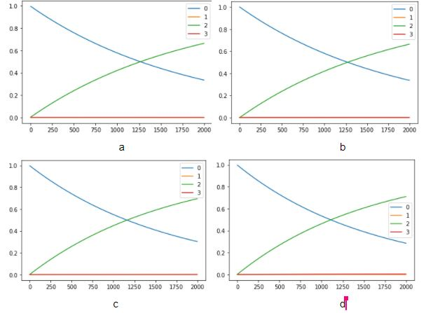
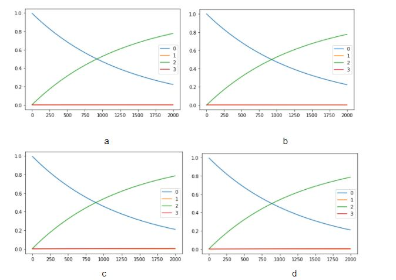

A continuación en este apartado podrás encontrar las gráficas representativas de acuerdo a el comportamiento del número de casos por estado.
Las siguientes gráficas se realizaron con el análisis de solo los 10 estados de nuestro top 10, (los 5 estados con mayor número de contagios y los 5 estados con menor número de casos.)
Los resultados que aquí presentamos corresponde al análisis teórico mediante las cadenas de Markov de la epidemia COVID-19 en México cuando planteamos tres escenarios diferentes respecto a la implementación de la jornada nacional de sana distancia(JNSD). Nosotros asumimos que después de la JNSD la población adopta en un 100% las medidas que estableció en gobierno federal, también no consideramos los cambios en la movilidad poblacional. Los invitamos a ingresar a la pestaña de “estadísticas” para que se den cuenta de lo que a continuación les narramos. Después de correr nuestras simulaciones se observa que el escenario uno con respecto a la decisión del gobierno federal, en la fecha de inicio de la jornada nacional de sana distancia, no cambia la dinámica de cada uno de los estados definidos. Eso parece lógico porque el virus empieza a transmitirse lentamente y antes de que se aceleren los contagios las personas permanecen en sus domicilios y se retrasa el momento de máxima transmisión. En los escenarios dos y tres se observa que si la decisión de iniciar la JNSD se hubiera pospuesto dos o cuatro semanas más, el número de contagios se habría elevado más rápidamente. También nos dimos a la tarea de analizar el top 5 de estados con mayor y menor número de casos confirmados hasta la fecha. Encontramos resultados muy interesantes ya que algunos de los estados con menor número de contagios(Nayarit, Zacatecas y Colima podrían llegar a ser de los primeros estados en alcanzar el punto en el que el 50% de su población se haya infectado), ¿irónico cierto? Pero eso se justifica con el hecho de que su población es mucho menor que a las grandes metrópolis pero también puede asociarse a las características socioeconómicas de cada entidad federativa. Hay estados en los que despueś de 200 dobles semanas (lo que es igual a 400 semanas), aún no habrán alcanzado el 50% de su población afectada por el virus, y eso se debe principalmente, de nuevo, a la tasa de incidencia. Lo que es importante recalcar es que Si la JNSD se hubiera implementado semanas después al 23 de marzo, los servicios de salud se hubiesen saturado y la crisis sanitaria tal vez no se habría podido controlar, por el contrario, si las medidas se hubieran aplicado con anticipación el resultado no habría cambiado en mucho y la economía tal vez se hubiera visto dañada prematuramente. Sabemos que la situación en la que nos encontramos es uno de los más grandes retos de las últimas décadas, pero lo mejor que podemos hacer es cuidarnos nosotros mismos y a los nuestros. Los gobiernos pueden o no equivocarse en la toma de decisiones pero mucho del resultado de esas decisiones también depende de nosotros como sociedad.
Gráfica 1. Casos diarios de los 5 estados con el mayor número de contagios a nivel nacional
La ciudad de México es el estado más poblado de la República Mexicana, a nivel mundial es considerada una de las ciudades con mayor número de habitantes y la cantidad de movimiento dentro de esta metrópoli es gigantesca. No es sorpresa que hasta la fecha sea el lugar con el mayor número de casos confirmados a SARS-Cov-2 en todo el país. El primer caso reportado en la Ciudad de México fue el 28 de febrero de este año, a partir de ahí el número de contagios fue en aumento y desde entonces ha ocupado el primer lugar a nivel nacional en casos positivos a la enfermedad Covid-19. Pero, ¿qué hubiera pasado si la jornada nacional de Sana distancia se hubiese implementado semanas antes o semanas después al 23 de marzo?, veámos el siguiente análisis:
Solamente por debajo de la Ciudad de México, el Estado de México es la segunda entidad con el mayo número de habitantes en el país. Su elevada población, su conexión tan estrecha con la Ciudad de México y el alto índice de tránsito diario hicieron de esta entidad el segundo lugar con el mayor número de contagios a nivel nacional. La pregunta de este trabajo, ¿Hubiera cambiado en algo la situacion si las medidas tomadas por el gobierno federal se hubiesen implementado antes o después de la fecha en la que se hizo? Veamos qué dicen nuestros resultados.
Actualmente Guanajuato ha presentado casos confirmados de transmisión comunitaria en los 46 municipios que existen en la entidad, lo que representa el 100 por ciento del territorio. A pesar de no ser una gran metrópoli es el tercer estado con mayor número de casos positivos por covid-19.
En las últimas semanas, Tabasco ha tenido una evolución favorable de la epidemia del COVID-19, que se ha reflejado en la disminución de nuevos casos, pacientes activos y hospitalizados. Pese a ello, actualmente ocupa el cuarto lugar dentro de los estados con mayor número de casos acumulados en el país.
Veracruz ocupa el quinto lugar de los estados con mayor número de casos reportados. Con la finalidad de frenar la propagación del COVID-19, a través de la Dirección de Protección contra Riesgos Sanitarios y en coordinación con las 11 jurisdicciones del estado se mantiene la estrategia de prevención y difusión de acciones de cuidado individual, familiar y comunitario, principalmente en municipios con mayor acumulación de casos sospechosos y positivos.
El estado de Morelos se encuentra como el estado con mayor número de contagios estando dentro de los primeros cinco estados con menor número de casos.
 
Esta entidad federativa es uno de los estados que menos número de casos ṕositivos a SARS-Cov-2 ha reportado en el país. A pesar de su cercanía con el valle de México (zona más poblada del país), ha mantenido una baja incidencia y pocos contagios en lo que va de esta epidemia nacional. Veamos las proyecciones en los diferentes escenarios que estamos estudiando:
El estado de Nayarit ocupa el lugar 29 en contagios a nivel nacional, sin embargo la incidencia de casos nuevos durante las últimas semanas se asemeja a aquellas entidades que están el el top 5 de más contagios. La ocupación hospitalaria es un tema que preocupa a las autoridades locales y con mucha razón, ya que en ocasiones han rebasado el 70% de su capacidad y con ello la atención a todos los pacientes graves se ha visto mermada. Veamos los gráficos de nuestro modelo:
A pesar de ser el estado 31 en casos por COVID-19, la incidencia en esta entidad es bastante elevada en comparación a otros estados con más contagios. Esa situación puede tener un impacto negativo si no se toman las medidas adecuadas para frenar la propagación del nuevo coronavirus. A continuación nuestras proyecciones se muestran para el estado de Zacatecas.
Colima es uno de los estados territorialmente más pequeño del país, cuentan con menos de un millón de habitantes y actualmente es la entidad con menos casos de coronavirus a nivel nacional, a lo largo de esta pandemia Colima se ha mantenido en ese último lugar de contagios reportados, sin embargo los datos de incidencia actuales indican que es casi de 75, una cifra incluso mayor que para la ciudad de México que tienen más de 10 veces la población de colima. Veamos este peculiar caso y su dinámica proyectada a futuro con los datos que se tienen hasta la fecha.
